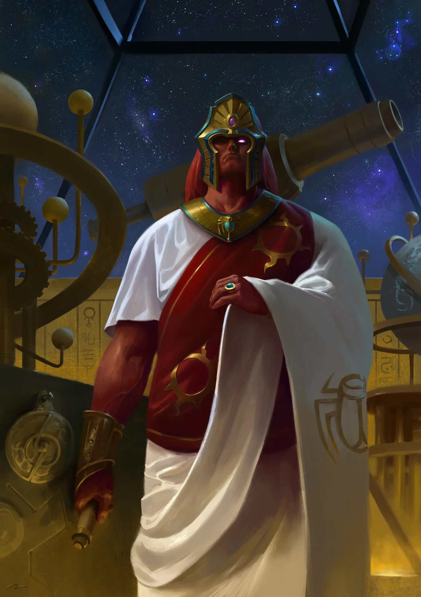

01ภาพรวม


02ต้นกำเนิด — Prospero ดาวแห่งพ่อมด
Magnus ตกลงบน Prospero ดาวของนักวิชาการผู้มีพลังจิตที่หนีการกดขี่ เขาเติบโตเป็นยักษ์ผิวแดงตาเดียวที่มีพลังจิตมหาศาลและรักความรู้
03บุตรที่เข้าใจบิดาที่สุด (ในเรื่องพลังจิต)
จักรพรรดิพบเขาในปี 840.M30 Magnus เป็น Primarch ที่ใกล้เคียงจักรพรรดิในด้านพลังจิตที่สุด ร่วมงานลับของบิดาในโครงการ Webway
04Flesh-change และข้อตกลงใน Warp
Thousand Sons เป็นโรคกลายพันธุ์ Magnus ทำข้อตกลงกับพลังใน Warp เพื่อหยุดมัน — โดยไม่รู้ว่าคือ Tzeentch
05ที่ประชุม Nikaea
พี่น้องหลายคนโดยเฉพาะ Russ และ Mortarion ต่อต้านการใช้พลังจิต จักรพรรดิห้ามใช้เวทมนตร์ Magnus ยอมรับอย่างไม่เต็มใจ
06ความผิดพลาดที่ยิ่งใหญ่ที่สุด
เมื่อเห็นว่า Horus จะทรยศ Magnus ส่งจิตไปเตือนจักรพรรดิถึงพระราชวังโดยตรง ทำลายโครงการ Webway และปล่อยปีศาจเข้ามา จักรพรรดิเชื่อว่า Magnus คือผู้ทรยศ
07Prospero ลุกเป็นไฟ
Horus บิดคำสั่งเป็น "ทำลาย" Space Wolves เผา Prospero Russ หักหลังของ Magnus เขายอมมอบตัวให้ Tzeentch เพื่อช่วย Legion ที่เหลือ
08ยุคปัจจุบัน
เป็น Daemon Prince บนดาว Planet of the Sorcerers บุก Fenris ย้ายดาวของตัวเองกลับไปที่ตั้ง Prospero เดิม และโจมตีกองเรือของ Guilliman
09นิสัยและบุคลิก
- กระหายความรู้
- หยิ่งในพลังของตัวเอง
- ตั้งใจดีแต่ทำพลาดอย่างร้ายแรง
- รักลูกน้องและความรู้มากกว่าการรบ
10อาวุธและยุทโธปกรณ์
11ความสัมพันธ์กับจักรพรรดิ

จักรพรรดิแห่งมนุษยชาติ
บิดาผู้สร้างไม่มีบันทึก
ไม่มีบันทึก
Magnus the Red คิดอย่างไรกับจักรพรรดิ
- พบกันครั้งแรกชื่นชมบิดาในฐานะผู้ใช้พลังจิตที่ยิ่งใหญ่ที่สุด
- Nikaeaผิดหวังที่บิดาห้ามพลังจิต
- หลังการเผา Prosperoรู้สึกถูกหักหลังโดยบิดาและพี่น้อง
จักรพรรดิคิดอย่างไรกับ Magnus the Red
- ภาพรวมจักรพรรดิเคยใกล้ชิด Magnus มาก แต่เมื่อ Magnus ทำลายโครงการ Webway พระองค์โกรธจนมองว่าเขาคือผู้ทรยศ
12ความสัมพันธ์กับพี่น้อง Primarch ทุกคน
มุมมองของ Magnus the Red ต่อพี่น้องแต่ละคน และมุมมองของพี่น้องต่อเขา — เรียงตามหมายเลข Legion กดชื่อเพื่อไปอ่านเรื่องของพี่น้องคนนั้น ดูภาพรวมทุกคู่ได้ที่ แผนผังความสัมพันธ์ของ Primarch

Lion El'Jonson
ไม่มีบันทึก- ภาพรวมไม่มีบันทึกเหตุการณ์สำคัญระหว่างทั้งสองโดยตรงในเนื้อเรื่องที่เผยแพร่ ทั้งคู่อยู่คนละฝ่ายในสงคราม Horus Heresy

Fulgrim
ไม่มีบันทึก- ภาพรวมไม่มีบันทึกเหตุการณ์สำคัญระหว่างทั้งสองโดยตรงในเนื้อเรื่องที่เผยแพร่ ทั้งคู่อยู่ฝ่ายทรยศ

Perturabo
เพื่อน / พันธมิตรเพื่อนร่วมค้นหาความรู้
สนิทกับ Magnus เพราะรักความรู้เหมือนกัน
- Great Crusadeทั้งสองใช้เวลาหลายเดือนด้วยกันตามหาความรู้ที่สูญหายของมนุษยชาติจากยุค Old Night — Perturabo เข้ากับ Magnus ได้ดีเพราะทั้งคู่กระหายความรู้

Jaghatai Khan
สนิทมากเพื่อนคนนอกเหมือนกัน
Magnus คือพี่น้องคนเดียวที่ Khan ไว้ใจจริง ๆ
- Great Crusadeทั้งสองเป็น "คนนอก" ในหมู่พี่น้อง Magnus เป็นคนตรงและซื่อสัตย์ Khan จึงไว้ใจเขาที่สุด
- NikaeaKhan เสียใจที่ไม่ได้อยู่ข้าง Magnus ในที่ประชุม
- Heresyเศษวิญญาณของ Magnus มาพบ Khan ขอให้เลือกข้าง และ Khan ทำลายมันในศึกที่ Prospero ครั้งที่สอง

Leman Russ
ศัตรูแค้น Russ ที่ทำลาย Prospero
เกลียดเวทมนตร์และการหลอกลวงของ Magnus
- Great Crusadeทั้งสองเกือบต่อยกันในภารกิจร่วมเรื่องพลังจิต Lorgar เข้ามาห้ามไว้
- NikaeaRuss เป็นผู้ต่อต้านพลังจิตเสียงดังที่สุด
- Burning of ProsperoRuss ถูกส่งไปนำตัว Magnus แต่ Horus เปลี่ยนคำสั่ง Russ เผา Prospero และหักหลังของ Magnus
- ยุคปัจจุบันMagnus บุก Fenris เพื่อแก้แค้น และถือ Space Wolves เป็นศัตรูอันดับหนึ่ง

Rogal Dorn
ไม่มีบันทึก- ภาพรวมไม่มีบันทึกเหตุการณ์สำคัญระหว่างทั้งสองโดยตรงในเนื้อเรื่องที่เผยแพร่ ทั้งคู่อยู่คนละฝ่ายในสงคราม Horus Heresy

Konrad Curze
ไม่มีบันทึก- ภาพรวมไม่มีบันทึกเหตุการณ์สำคัญระหว่างทั้งสองโดยตรงในเนื้อเรื่องที่เผยแพร่ ทั้งคู่อยู่ฝ่ายทรยศ

Sanguinius
นับถือไม่มีบันทึกความรู้สึกเฉพาะ
สนับสนุน Magnus อย่างสุขุมในเรื่องพลังจิต
- NikaeaSanguinius สนับสนุนการใช้ Librarian แต่ด้วยท่าทีที่แนบเนียนกว่า Magnus

Ferrus Manus
ไม่มีบันทึก- ภาพรวมไม่มีบันทึกเหตุการณ์สำคัญระหว่างทั้งสองโดยตรงในเนื้อเรื่องที่เผยแพร่ ทั้งคู่อยู่คนละฝ่ายในสงคราม Horus Heresy

Angron
ไม่มีบันทึก- ภาพรวมไม่มีบันทึกเหตุการณ์สำคัญระหว่างทั้งสองโดยตรงในเนื้อเรื่องที่เผยแพร่ ทั้งคู่อยู่ฝ่ายทรยศ

Roboute Guilliman
ศัตรูต้องการแย่งชัยชนะและทำลาย Guilliman
ศัตรูที่เกือบฆ่าเขาระหว่างเดินทางไป Terra
- Terran Crusade (999.M41)Magnus ดักกองเรือของ Guilliman ใกล้ Maelstrom และต่อสู้กับเขาใน Webway และบนดวงจันทร์ Luna ก่อน Guilliman จะไปถึง Terra ได้

Mortarion
ศัตรูไม่ไว้ใจ Mortarion ที่ขัดขวางเขาใน Nikaea
เกลียดพลังจิตของ Magnus
- Nikaeaคำให้การสั้น เรียบ และตรงประเด็นของ Mortarion ต่อต้านพลังจิต มีผลต่อการตัดสินของจักรพรรดิอย่างมาก ทำให้ Magnus ต้องแก้ต่างอย่างดุเดือด
- 999.M41Mortarion สร้างโรคระบาดบนดาว Midgardia จน Space Wolves ต้องทำลายดาว Magnus ใช้การสังเวยนั้นย้ายดาวของเขาไปที่ Prospero เดิม

Horus Lupercal
ซับซ้อนพยายามช่วย Horus และเตือนบิดา — แต่กลับถูกมองเป็นผู้ทรยศ
ใช้ความผิดของ Magnus ส่ง Russ ไปทำลายเขา
- DavinMagnus เข้าสู่ Warp เพื่อพยายามหยุด Horus ไม่ให้ตกสู่ Chaos บอกว่านิมิตที่ Horus เห็นเป็นเพียงอนาคตหนึ่ง แต่ไม่สำเร็จ
- การเตือนMagnus ส่งจิตไปเตือนจักรพรรดิ ทำให้จักรพรรดิเข้าใจผิดว่า Magnus เป็นผู้ทรยศ
- ProsperoHorus บิดคำสั่งให้ Russ ทำลาย Prospero Magnus จึงหันไปหา Tzeentch และภายหลังรบข้าง Horus

Lorgar Aurelian
เพื่อน / พันธมิตรสนทนาปรัชญาและศาสนากับ Lorgar
มองว่า Magnus คือ Primarch ที่ทรงพลังที่สุด
- Great CrusadeLorgar ห้ามการปะทะระหว่าง Magnus กับ Russ ทั้งสองคุยกันเรื่องความจริงของ Warp บ่อยครั้ง
- MonarchiaLorgar เห็น Magnus อยู่ข้างจักรพรรดิตอนมาถึง Khur และสงสัยว่าทำไมจักรพรรดิไม่เลือก Magnus มาลงโทษ
- หลัง ProsperoLorgar มองว่าการล่มของ Magnus คือ "บทเรียนสุดท้าย" ที่ทำให้เขาเข้าใจความจริง

Vulkan
ซับซ้อนเศษวิญญาณของ Magnus ช่วยนำร่างของ Vulkan กลับบ้าน
ไม่มีบันทึก
- Heresyเศษวิญญาณ (Shard) ของ Magnus ช่วยนำยาน Fire Ark ที่บรรทุกร่างของ Vulkan ผ่านพายุ Ruinstorm กลับ Nocturne

Corvus Corax
ไม่มีบันทึก- ภาพรวมไม่มีบันทึกเหตุการณ์สำคัญระหว่างทั้งสองโดยตรงในเนื้อเรื่องที่เผยแพร่ ทั้งคู่อยู่คนละฝ่ายในสงคราม Horus Heresy

Alpharius Omegon
ไม่มีบันทึก- ภาพรวมไม่มีบันทึกเหตุการณ์สำคัญระหว่างทั้งสองโดยตรงในเนื้อเรื่องที่เผยแพร่ ทั้งคู่อยู่ฝ่ายทรยศ
?Primarch ที่ II และ XI (ถูกลบ)
ไม่มีบันทึก- ภาพรวมทุกบันทึกของ Primarch ที่ 2 และ 11 ถูกลบ พี่น้องที่เหลือถูกห้ามพูดถึง ความสัมพันธ์ใด ๆ จึงไม่ปรากฏในประวัติศาสตร์